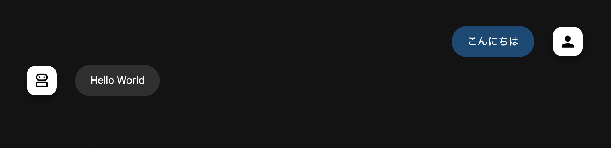

Pythonで Agent2Agent Protocol
- Event:
みんなのPython勉強会#116
- Presented:
2025/07/17 nikkie
AI Agent どうし の話
(略) Agentic AI systems represent a paradigmatic shift marked by multi-agent collaboration, (略)
論文「AI Agents vs. Agentic AI: A Conceptual Taxonomy, Applications and Challenges」によれば、単体のエージェントをAgentic AIとは呼びません
A2A、ご存知ですか？🙋
この 4月 のGoogle Cloud Next ‘25で発表
A2Aのページ より
Build with ADK (or any framework), equip with MCP (or any tool), and communicate with A2A, to remote agents, local agents, and humans.
A2Aのコンセプト
フレームワーク（ADK など）を使って、エージェントを構築
エージェントに ツール を持たせる（MCP）
A2Aでリモートエージェント、ローカルエージェント、 人類 が やりとり
リモート エージェントと ローカル エージェント

サーバとクライアント
- リモートエージェント:
A2Aサーバ
- ローカルエージェント:
A2Aクライアント
HTTP でやり取り
A2Aサーバの実装
GET /.well-known/agent.json
Agent Card 公開
POST / （※Agent Cardに記載）
JSON RPCでクライアントから呼び出す
agent.json （抜粋）
{
"name": "Hello World Agent",
"description": "Just a hello world agent",
"url": "http://localhost:9999/",
"skills": [
{
"description": "just returns hello world",
"examples": [
"hi",
"hello world"
],
"id": "hello_world",
"name": "Returns hello world",
"tags": [
"hello world"
]
}
]
}JSON RPC
% curl http://0.0.0.0:9999/ --json '{"id": 1, "jsonrpc": "2.0", "method": "message/send", "params": {"message": {"role": "user", "parts": [{"kind": "text", "text": "Hi"}], "messageId": "abc"}}}'
{"id":1,"jsonrpc":"2.0","result":{"kind":"message","messageId":"13c44c32-1fcf-4d27-a3c5-d5fd46583390","parts":[{"kind":"text","text":"Hello World"}],"role":"agent"}}a2a-sdk
PythonでA2Aサーバ・クライアントの実装例（フレームワーク非依存）
Hello World サンプル：https://github.com/a2aproject/a2a-samples/tree/main/samples/python/agents/helloworld
Hello World エージェントとA2A
リモート：Hello World （a2a-sdk実装）
ローカル：人 （ADKでつなぎこみ）
ADK: Agent Development Kit
Add A2A support as experimental features (1.6.1)
root_agent = RemoteA2aAgent(
name="Hello_World_Agent",
agent_card="http://0.0.0.0:9999/.well-known/agent.json",
)デモ：ローカル（人）からリモートにメッセージを送信
デモ：ローカル（人）からリモートにメッセージを送信
- A2Aサーバ:
uv run . (a2a-samples の Hello World)
- A2Aクライアント:
uvx --from 'google-adk[a2a]' adk web (call_from_adk agent)
デモ：ローカル（人）からリモートにメッセージを送信
今回はメッセージに絞ってますが、タスク という概念があります（時間のかかる処理らしい）
積ん読リストより AI エージェントの連携を標準化する A2A プロトコルを試してみる
プロトコル ということは
フレームワークによらない
プログラミング言語によらない（Python以外）
a2a-sdkを使わない例
リモート：オウム返し（FastAPI 実装）
ローカル：人（ADKでつなぎこみ）
A2Aに則るので、メッセージをやり取りできます！
% curl http://0.0.0.0:9999/ --json '{"id": 1, "jsonrpc": "2.0", "method": "message/send", "params": {"message": {"role": "user", "parts": [{"kind": "text", "text": "Hi"}], "messageId": "abc"}}}'
{"id":1,"jsonrpc":"2.0","result":{"kind":"message","messageId":"4d1dfebee3af46c8b2c726074de3b536","parts":[{"kind":"text","text":"Hi"}],"role":"agent"}}デモ：a2a-sdkを使わない例

デモ：a2a-sdkを使わない例
- A2Aサーバ:
uv run minimum_server.py
- A2Aクライアント:
uvx --from 'google-adk[a2a]' adk web (call_from_adk)（再掲）
まとめ🌯：Pythonで Agent2Agent Protocol
A2Aは リモートエージェント と ローカルエージェント のやり取りのためのプロトコル
Pythonには a2a-sdk がある
ADKなどフレームワークでもサポートが進む（PydanticAI）
以上、nikkie（にっきー）でした！
機械学習エンジニア・Speeda AI Agent 開発（We're hiring!）
みんなのPython勉強会 スタッフ・4代目LT王子
Thank you for your attention!